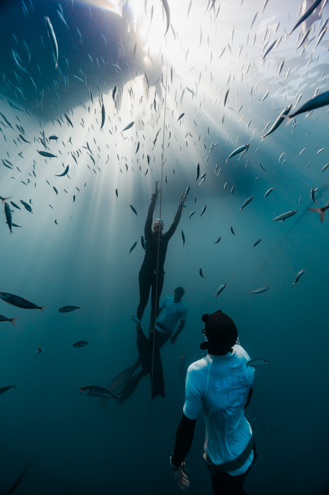
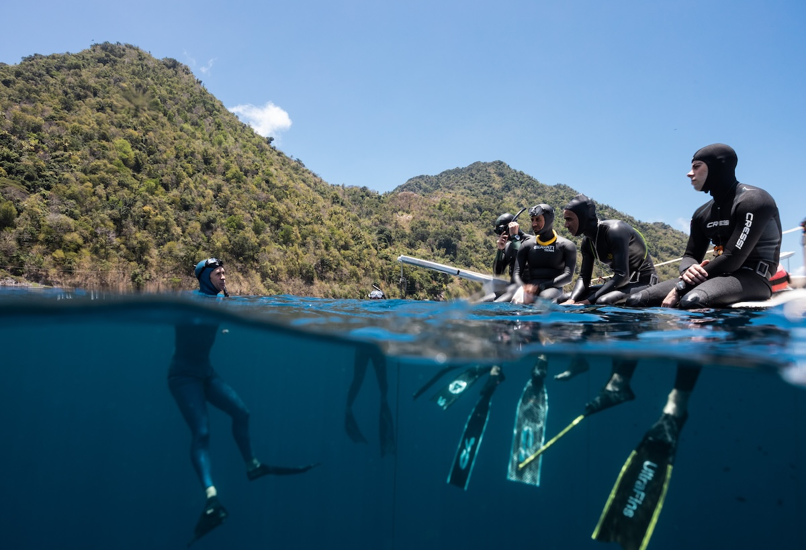
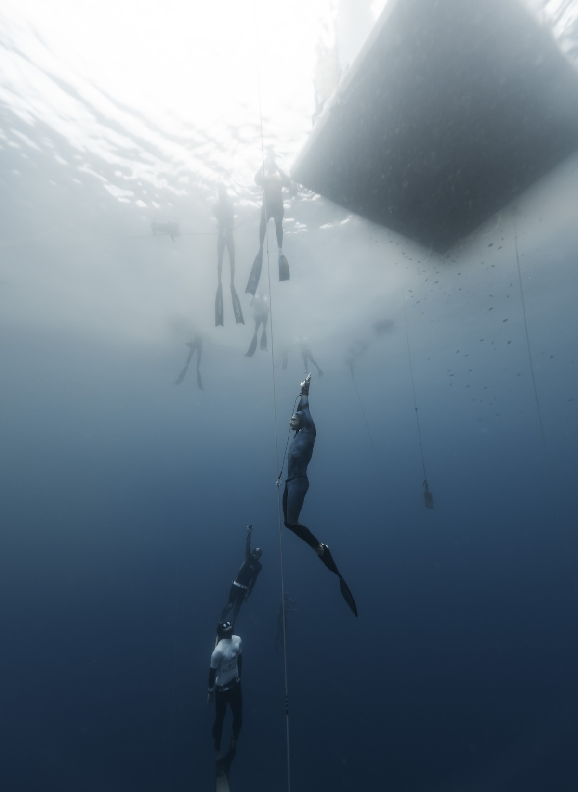
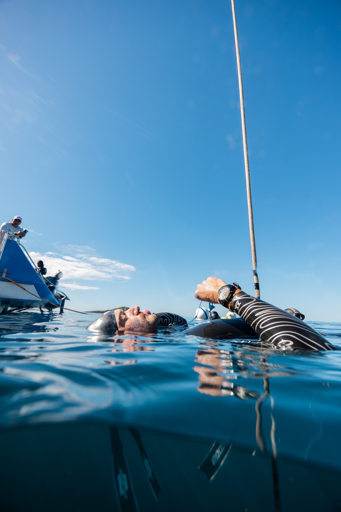
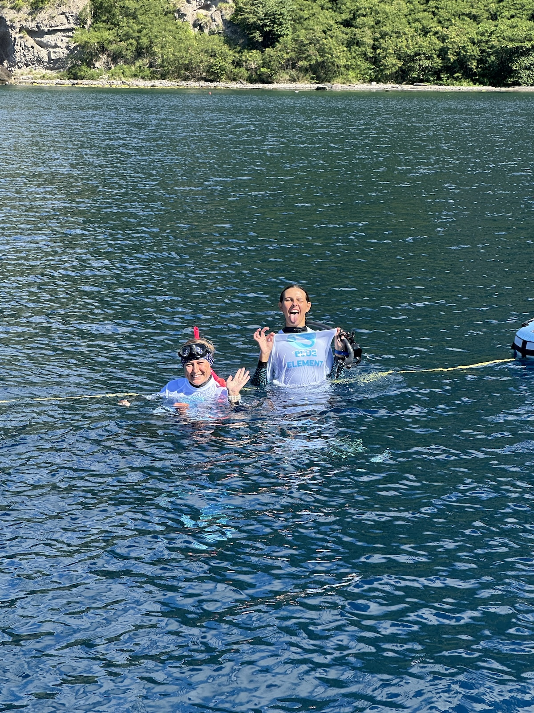
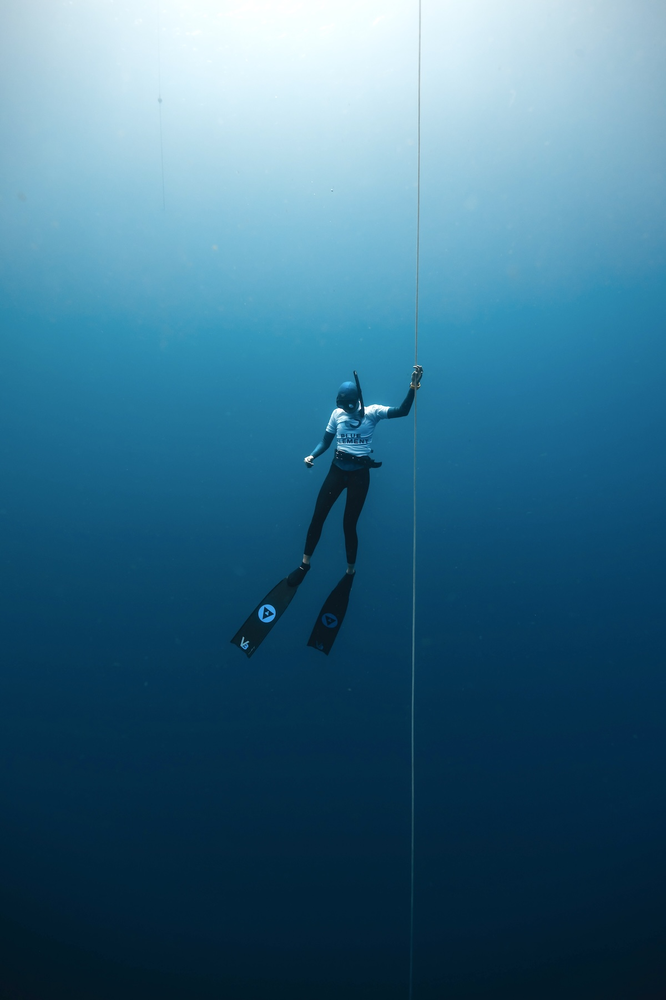

Learn to
Freedive
From your first calm breath-hold to teaching the sport yourself — internationally recognised AIDA and Molchanovs courses, run year-round for every level in the best conditions on earth.
From your first calm breath-hold to teaching the sport yourself — internationally recognised AIDA and Molchanovs courses, run year-round for every level in the best conditions on earth.
Freedive with us
Where you start
Freediving isn't about forcing yourself deeper — it's about relaxation, technique and trust. Every Blue Element course is built around that principle, with small groups and instructors who dive far deeper than anything you'll attempt in your program.
We teach both of the sport's leading curricula — the full AIDA pathway and the Molchanovs Wave system to Wave 4 — all the way to instructor level. Whether you've never held your breath underwater, you're chasing a personal best beyond 40 metres, or you want to teach the sport yourself, there's a clear, safe step for you here.
The pathway
Each course stacks on the last — available in both AIDA and Molchanovs (Wave) systems. Most divers begin at AIDA 2 / Wave 1, but if you're brand new, AIDA 1 is the perfect, pressure-free introduction.

EntryA half-day taste — breathe, relax and make your first dives to around 6m. No experience needed.

BeginnerYour first full certification. Equalisation, finning, rescue and dives to 16–20m over two to three days.
 Intermediate
IntermediateFree immersion, mouthfill equalisation and rescue from depth. Dives to 24–30m.
 Expert
ExpertThe deepest recreational certification — advanced mouthfill, full safety and dives beyond 38m.
Specialist courses
Four programmes beyond the recreational pathway — deep-water safety, no-limits depth, advanced equalisation, or becoming an instructor.

SafetyThe competition-grade deep-water safety qualification — line management, rescue from depth and O₂ protocols, over four days.
AdvancedSled-based depth diving for experienced freedivers chasing a personal best, under full supervision.

ClinicA focused clinic on advanced equalisation — mouthfill, reverse packing and depth technique — to break through your equalisation ceiling.

ProfessionalBecome a certified AIDA freediving instructor — qualified to teach AIDA 1–3 and the Monofin course. Teaching exams, risk management and the business of freediving, over 8–10 days. Requires AIDA 4.
Prices are per person in USD and include certification, equipment and platform fees. Multi-course and group bookings discounted — just ask.
At a glance


Every course includes
Small groups, professional safety on every session, and a setup most centres reserve for elite athletes — from day one.

Private coaching & camps
Already certified and chasing a number? Book one-to-one coaching or join a small-group deep camp. We tailor every session to your technique, your equalisation and your goals — with video review and daily debriefs.
Before you book
Ready when you are
Tell us your level and your dates — we'll match you to the right course and the right coach.